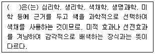
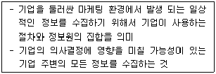
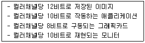
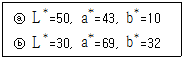
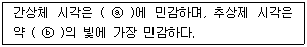
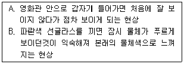
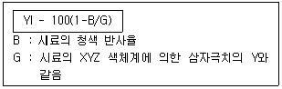
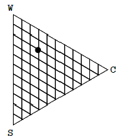

컬러리스트기사 (2019-03-03 기출문제)
1과목: 색채심리 마케팅
1. 색채와 자연환경과의 관계에 대한 설명 중 틀린 것은?
- 풍토색은 기후와 토지의 색, 즉 그 지역에 부는 바람, 태양의 빛, 흙의 색과 관련이 있다.
- 제주도의 풍토색은 현무암의 검은색이라고 할 수 있다.
- 지구의 위도에 따라 일조량이 다르고 자연광의 속성이 변하므로 각각 아름답게 보이는 색에 차이가 있다.
- 자역색은 우리가 눈으로 보는 건물과 도로 등 사물의 색으로 한정하여 지칭하는 색이다.
(정답률: 86%)

2. 다음 ( ) 안에 들어갈 알맞은 용어는?

- 안전색채
- 색채연상
- 색채조절
- 색채조화
(정답률: 56%)
3. 기후에 따른 색채 선호에 대한 설명으로 틀린 것은?
- 라틴계 민족은 난색계통을 좋아한다.
- 북구(北毆)계 민족은 연보라, 스카이블루 등의 파스텔풍를 좋아한다.
- 일조량이 많은 지역 사람들이 선호하는 실내색채는 초록, 청록 등이다.
- 흐린 날씨의 지역 사람들이 선호하는 건물외관 색채는 노랑과 분홍 등이다.
(정답률: 72%)
4. 경영전략의 하나로, 상표 이미지를 시각적으로 체계화, 단순화하여 소비자에게 인식시키고, 체계적인 관리를 통해 특정 브랜드에 대한 선호를 향상시키는 것은?
- Brand Model
- Brand Royalty
- Brand Name
- Brand Identity
(정답률: 78%)
5. 모더니즘의 대두와 함께 주목을 받게 된 색은?
- 빨강과 자주
- 노랑과 파랑
- 하양과 검정
- 주황과 자주
(정답률: 75%)
6. 기업이미지 구축을 위한 색채계획에서 가장 우선적으로 고려하는 것은?
- 선호색
- 상징성
- 진상효과
- 실용성
(정답률: 83%)
7. 마케팅 믹스에 대한 설명으로 옳은 것은?
- 시장을 세분화하는 방법
- 마케팅에서 경쟁 제품과의 위치 선정을 하기 위한 방법
- 마케팅에서 제품 구매 집단을 선정하는 방법
- 표적시장에서 원하는 결과를 얻기 위해 가능한 수단을 활용하는 방법
(정답률: 67%)
8. 색채마케팅 과정을 색채정보화, 색채기획, 판매촉진전략, 정보망구축으로 분류할 때 색채기획단계에 해당하지 않는 것은?
- 소비자의 선호색 및 경향조사
- 타깃 설정
- 색채 콘셉트 및 이미지 설정
- 색채 포지셔닝 설정
(정답률: 45%)
9. 종교와 색채에 대한 설명이 틀린 것은?
- 기독교에서는 그리스도의 흰 옷, 천사의 흰 옷등을 통해 흰색을 성스러운 이미지로 표현한다.
- 이슬람교에서는 신에게 선택되어 부활할 수 있는 낙원을 상징하는 녹색을 매우 신성시한다.
- 힌두교에서는 해가 떠오르는 동쪽은 빨강, 해가 지는 서쪽은 검정으로 여긴다.
- 고대 중국에서는 천상과 지상에서 가장 경이로운 색중의 하나가 검정이라 하였다.
(정답률: 29%)
10. 색채계획과 실제 색채조절시 고려할 색의 심리효과로 거리가 먼 것은?
- 냉난감
- 가시성
- 원근감
- 상징성
(정답률: 48%)
11. 제품의 위치(Positioning)는 소비자들이 경쟁제품과 비교하여 갖게 되는 여러 요소들이 복합적으로 영향을 미쳐 형성된다. 이러한 요소 중 거리가 먼 것은?
- 날씨
- 가격
- 인상
- 감성
(정답률: 78%)
12. 표본 추출에 대한 설명으로 틀린 것은?
- 표본 추출은 편의가 없는 조사를 위해 미리 설정된 집단 내에서 뽑아야 한다.
- 일반적으로 큰 표본이 작은 표본보다 정확도는 더 높은 대신 시간과 비용이 증가된다.
- 일반적으로 조사대상의 속성은 다원적이고 복합하기에 모든 특성을 고려하여 표본을 선정하는 것은 불가능하다.
- 표본의 크기는 대상 변수의 변수도, 연구자가 감내할 수 있는 허용오차의 크기 및 허용오차 범위내의 오차가 반영된 조사 결과 확률을 고려하여 결정해야 한다.
(정답률: 60%)
13. 소비자의 구매심리과정이 올바른 표현된 것은?
- 흥미 → 주목 → 기억 → 욕망 → 구매
- 주목 → 흥미 → 욕망 → 기억 → 구매
- 흥미 → 기억 → 주목 → 욕망 → 구매
- 주목 → 욕망 → 흥미 → 기억 → 구매
(정답률: 60%)
14. 다음 중 색채조절의 효과가 아닌 것은?
- 신체의 피로를 막는다.
- 안전이 유지되고 사고가 줄어든다.
- 개인적 취향이 잘 반영된다.
- 일의 능률이 오른다.
(정답률: 85%)
15. 노인, 가을, 흙 등 구체적인 연상에 가장 적합한 톤(tone)은?
- pale
- light
- dull
- grayish
(정답률: 75%)
16. 다음은 마케팅정보시스템 중 무엇에 관한 설명인가?

- 내부정보시스템
- 고객정보시스템
- 마케팅 의사결정지원 시스템
- 마케팅 인텔리전스 시스템
(정답률: 60%)
17. SD법 조사에 대한 설명으로 틀린 것은?
- 찰스 오스굿(Charles Egerton Osgood)이 개발하였다.
- 색채에 대한 심리적인 측면을 다면적으로 다루는 방법이다.
- 이미지 프로필과 이미지맵으로 결과를 볼 수 있다.
- 형용사 척도에 대한 답변은 보통 4단계 또는 6단계로 결정된다.
(정답률: 60%)
18. 마케팅 연구에서 소비시장을 체계적으로 분석 하는 것과 관련한 설명 중 틀린 것은?
- 다양한 문화권의 사람들이 공존하는 사회는 종교나 인종에 따라 구성된 하위문화가 존재한다.
- 세대별 문화 특성은 각긱 다른 제품과 서비스를 선호하는 소비시장을 형성한다.
- 소비자의 다양한 욕구와 구매패턴에 대응하기 위해 세분화된 시장을 구축해야 한다.
- 다품종 대량생산체제로 변화되는 시장세분화 방법이 시장위치 선정에 유리하다.
(정답률: 67%)
19. 색채의 공감각에 대한 설명 중 틀린 것은?
- 색채와 다른 감각간의 교류작용으로 생기는 현상이다.
- 몬드리안은 시각과 청각의 조화를 통해 작품을 만들었다.
- 짠맛은 회색, 흰색이 연상된다.
- 요하네스 이텐은 색을 7음계에 연계하여 색채와 소리의 조화론을 설명하였다.
(정답률: 58%)
20. 색채 마케팅 전략을 수립하는데 있어서 생활유형(Life Style)이 대두된 이유가 아닌 것은?
- 물적 충실, 경제적 효용의 중시
- 소비자 마케팅에서 생활자 마케팅으로의 전환
- 기업과 소비자간의 커뮤니케이션 장애 제거의 필요성
- 새로운 시장 세분화(market segmentation) 기준으로서의 생활유형이 필요
(정답률: 48%)
2과목: 색채디자인
21. 다음 중 디자인 아이디어 발상법이 아닌 것은?
- 글래스 박스(Glass box)법
- 체크리스트(Checklist)법
- 마인드 맵(Mind map)법
- 입출력(input-output)법
(정답률: 53%)
22. 디자인의 개념을 설명한 것으로 거리가 먼 것은?
- 디자인은 생활의 예술이다.
- 디자인은 일부 사물과 일정한 범위 안의 시스템과 관계된다.
- 디자인은 커뮤니케이션의 수단이다.
- 디자인은 미지의 세계로부터 새로운 가치를 추구하는 것이다.
(정답률: 48%)
23. 1960년대 미국에서 시작된 것으로 캔버스에 그려진 회화 예술이 미술관, 화랑으로부터 규모가 큰 옥외 공간, 거리나 도시의 벽면에 등장한 것은?
- 크래프트디자인
- 슈퍼그래픽
- 퓨전디자인
- 옵티컬아트
(정답률: 56%)
24. 착시가 잘 나타나는 예로 적합하지 않은 것은?
- 길이의 착시
- 면적과 크기의 착시
- 방향의 착시
- 질감의 착시
(정답률: 68%)
25. 굿 디자인의 4대 조건이 아닌 것은?
- 독창성
- 합목적성
- 질서성
- 경제성
(정답률: 67%)
26. 끊임없는 변화를 뜻하는 국제적인 전위예술운동으로 전반적으로 회색조와 어두운 색조를 주로 사용한 예술사조는?
- 포스트모더니즘(Post-modernism)
- 키치(Kitsch)
- 해체주의(Deconstructivism)
- 플럭서스(Fluxus)
(정답률: 34%)
27. 검정색과 노란색을 사용하는 교통 표시판은 색채의 어떠한 특성을 이용한 것인가?
- 색채의 연상
- 색채의 명시도
- 색채의 심리
- 색채의 이미지
(정답률: 76%)
28. 룽게(Philipp Otto Runge)의 색채구를 바우하우스에서의 색채교육을 위해 재구성한 사람은?
- 요하네스 이텐
- 요셉 알버스
- 클레
- 칸딘스키
(정답률: 61%)
29. 게슈탈트(Gestalt)의 원리 중 부분이 연결되지 않아도 완전하게 보려는 시각법칙은?
- 연속성(continuation)의 요인
- 근접성(proximity)의 요인
- 유사성(similarity)의 요인
- 폐쇄성(closure)의 요인
(정답률: 61%)
30. 1차 세계대전 후 전통이나 기존의 예술형식을 부정하고 좀 더 새롭고 파격적인 변화를 추구한 예술운동은?
- 다다이즘
- 아르누보
- 팝아트
- 미니멀리즘
(정답률: 49%)
31. 기업이미지 통일화 정책을 의미하며 다른 기업과의 차이점 표출을 통해 지속성과 일관성, 기업 문화 및 경영전략 등을 구성하는 CI의 3대 기본요소가 아닌 것은?
- VI(Visual Identity)
- BI(Behavior Identity)
- LI(Language Identity)
- MI(Mind Identity)
(정답률: 55%)
32. 사용자 인터페이스 디자인(User Interface Design)의 궁극적인 목표는?
- 사용자 편의성의 극대화
- 홍보 효과의 극대화
- 개발기간의 최소화
- 새로운 수요의 창출
(정답률: 76%)
33. 기업방침, 상품의 특성을 홍보하고 판매를 높이기 위한 광고매체 선택의 전략적 방향과 거리가 먼 것은?
- 기업 및 상품의 존재를 인지시킨다.
- 현장감과 일치하여 아이덴티티(Identity)를 얻어야 한다.
- 소비자에게 공감(consensus)을 얻을 수 있어야 한다.
- 정보의 DB화로 상품의 가격을 높일 수 있어야 한다.
(정답률: 74%)
34. 병원 수술실의 색채계획시 가장 우선적으로 고려해야 할 색의 지각현상은?
- 동화효과
- 색음현상
- 잔상현상
- 명소시
(정답률: 58%)
35. 사용자의 경험과 사용자가 선택하는 서비스나 제품과의 상호작용을 디자인의 주요 요소로 고려하는 디자인은?
- 공공디자인
- 디스플레이 디자인
- 사용자 경험디자인
- 환경디자인
(정답률: 80%)
36. 서로 관련이 없어 보이는 것들을 조합하여 새로운 것을 도출해 내는 집단 아이디어 발상법으로, 문제를 보는 관점을 완전히 다르게 하여 연상되는 점과 관련성을 찾아내는 것은?
- 고든(Gordon Technique)법
- 시네틱스(Synectics)법
- 브레인스토밍(Brainstorming)법
- 매트릭스(Matrix)법
(정답률: 52%)
37. 도형과 바탕의 반전에 관한 설명 중 바탕이 되기 쉬운 영역의 예에 해당하는 것은?
- 기울어진 방향보다 수직, 수평으로 된 영역
- 비대칭 영역보다 대칭형을 가진 영역
- 위로부터 내려오는 형보다 아래로부터 올라가는 형의 영역
- 폭이 일정한 영역보다 폭이 불규칙한 영역
(정답률: 41%)
38. 1960년대 후반부터 미국에서 현저하게 나타난 동향으로 단순한 기하학적 형태를 사용하며 이미지와 조형요소를 최소화하여 기본적인 구조로 환원시키고 단순함을 강조한 것은?
- 팝아트
- 옵아트
- 미니멀리즘
- 포스트모더니즘
(정답률: 56%)
39. 산업디자인에 있어서 생물의 자연적 형태를 모델로 하는 조형이나 시스템을 만드는 경향을 뜻하는 디자인은?
- 버네큘러 디자인(Vernacular Design)
- 리디자인(Redesign)
- 엔틱 디자인(Antique Design)
- 오가닉 디자인(Organic Design)
(정답률: 73%)
40. 색채안전계획이 주는 효과로서 가장 타당한 것은?
- 눈의 긴장과 피로를 증가시킨다.
- 사고나 재해를 감소시킨다.
- 질병이 치료되고 건강해진다.
- 작업장을 보다 화려하게 꾸밀 수 있다.
(정답률: 75%)
3과목: 색채관리
41. 다음의 조색 관련 용어에 관한 설명 중 틀린 것은?
- 광원색은 광원에서 나오는 빛의 색을 뜻하며 보통 색자극 값으로 표시
- 무체색은 빛을 반사 또는 투과하는 물체의 색을 뜻하며, 보통 특정 표준광에 대한 색도
- 광택도는 물체 표면의 광택의 정도를 일정한 굴절률을 갖는 흰색 유리의 광택값을 기준으로 나타내는 수치
- 표면색은 빛을 확산 반사하는 불투명 물체의 표면에 속하는 것처럼 지각되는 색
(정답률: 34%)
42. 반투명의 유리나 플라스틱을 사용하여 광원 빛의 60‾90%가 대상체에 직접 조사되는 방식으로, 그림자와 눈부심이 생기는 조명방식은?
- 전반확산조명
- 직접조명
- 반간접조명
- 반직접조명
(정답률: 45%)
43. 광원에 의해 조명되는 물체색의 지각이, 규정조건하에서 기준 광원으로 조명했을 때의 지각과 합치되는 정도를 표시하는 수치는?
- 색변이 지수(Color Inconstancy Index : CII)
- 연색 지수(Color Renderign Index : CRI)
- 허용 색차(Color tolerance)
- 등색도(degree of metamerism)
(정답률: 42%)
44. 포르피린과 유사한 구조로 된 유기 화합물로 안정성이 높고 색조가 강하여 초록과 청색계열 안료나 염료에 많이 사용되는 색료는?
- 헤모글로빈(hemoglobin)
- 프탈로시아닌(phthalocyanine)
- 플라보노이드(flavonoid)
- 안토시아닌(anthocyanin)
(정답률: 47%)
45. 색료 선택 시 고려되어야 할 조건이 중 틀린 것은?
- 특정 광원에서만의 색채 현시(color appearance)에 대한 고려
- 착색비용
- 작업공정의 기능성
- 착색의 견뢰성
(정답률: 39%)
46. KS A 0065 : 표면색의 시감비교방법에 따라 인공주광 D50을 이용한 부스에서의 색 비교를 할 때 광원이 만족해야할 성는에 대한 설명으로 잘못된 것은?
- 자외부의 복사에 의해 생기는 형광을 포함하지 않는 표면색을 비교하는 경우 사용 광원 D50은 형광 조건 등색지수 1.5이내의 성능수준을 충족시켜야 한다.
- 주광 D50과 상대 분광 분포에 근사하는 상용 광원 D50을 사용한다.
- 상용 광원 D50은 가시 조건 등색 지수B 등급 이상의 성능을 충족시켜야 한다.
- 상용 광원 D50은 특수 연색 평가수 85이상의 성능을 충족시켜야 한다.
(정답률: 23%)
47. 색온도의 단위와 표시방법에 대한 설명으로 올바른 것은?
- 양의 기호 TD로 표시, 단위는 K
- 양의 기호 TC-1로 표시, 단위는 K-1
- 양의 기호 TC로 표시, 단위는 K
- 양의 기호 TCP로 표시, 단위는 K
(정답률: 61%)
48. 분광 측색 장비의 특징으로 잘못 설명된 것은?
- 서너 개의 필터를 이용해 삼자극치 값을 직독한다.
- 시료의 분광반사율을 사용하여 색좌표를 계산한다.
- 다양한 광원과 시야에서의 색좌표를 산출할 수 있다.
- 분광식 측색장비는 자동배색장치(computer color matching)의 색측정 장치로 활용된다.
(정답률: 45%)
49. KS A V0065 : 표면색의 시감비교방법에서 색비료를 위한 시환경에 대한 설명이 틀린 것은?
- 부스의 내부 명도는 L*가 약 50인 광택의 무채색으로 한다.
- 작업면의 조도는 1000 lx ~ 4000 lx 사이가 적합하다.
- 작업면의 균제도는 80% 이상이 적합하다.
- 어두운 색을 비교하는 경우 작업면 조도는 4000lx에 가까운 것이 좋다.
(정답률: 35%)
50. 황색으로 염색되는 직접염료로 9월에 열매를 채취하여 볕에 말려 사용하고, 종이나 직물의 염색 및 식용색소로도 사용되는 천연염료는?
- 치자염료
- 자초염료
- 오배자염료
- 홍화염료
(정답률: 74%)
51. x, y 좌표를 기반으로 2차원이나 3차원 공간에서 선, 색, 형태 등을 표현하는 이미지의 형태는?
- 비트맵 이미지
- 래스트 이미지
- 벡터 그래픽 이미지
- 메모리 이미지
(정답률: 57%)
52. CCM의 특성으로 보기 어려운 것은?
- 스펙트럼 데이터를 이용하므로 아이소머리즘을 실현할 수 있다.
- 컬러런트의 양을 조절하므로 조색에 걸리는 시간을 단축할 수 있다.
- 최소량의 컬러런트를 사용하여 조색하므로 원가가 절감된다.
- CCM에서 조색된 처방은 여러 소재에 동일하게 적용할 수 있다.
(정답률: 62%)
53. 다음 조건을 바탕으로 실제 모니터 디스플레이에서 보여질 색 수는? (단, 업스케일링을 가정하지 않음)

- 4096 × 4096 × 4096
- 2048 × 2048 × 2048
- 1024 × 1024 × 1024
- 256 × 256 × 256
(정답률: 40%)
54. 장치 종속적(device-dependent) 색공간에 대한 설명으로 틀린 것은?
- RGB, CMYK는 장치 종속적 색공간이다.
- 사람의 눈이 인지하는 색을 수치화하였다.
- 컬러 프로파일에 기록되는 수치이다.
- 같은 RGB 수치라도 장치에 따라 다른 색으로 보인다.
(정답률: 47%)
55. 두 물체의 표면색을 측색한 결과 그 값이 다음과 같을 때 옳은 설명은?

- ⓐ는 ⓑ보다 명도는 높고 채도는 낮다.
- ⓐ는 ⓑ보다 명도는 낮고 채도는 높다.
- ⓐ는 ⓑ보다 색상이 선명하고 명도는 낮다.
- ⓐ는 ⓑ보다 색상이 흐리고 채도는 높다.
(정답률: 66%)
56. 혼합비율이 동일해도 정확한 중간 색값이 나오지 않고 색도가 한쪽으로 치우쳐 나타나는 원인을 규명하기 위한 안료 감사 항목은?
- 안료 입자 형태와 크기에 의한 착색력
- 안료 입자 형태와 크기에 의한 은폐력
- 안료 입자 형태와 크기에 의한 흡유(수)력
- 안료 입자 형태와 크기에 의한 내광성
(정답률: 43%)
57. 일반적인 염료 또는 안료의 설명으로 올바른 것은?
- 염료는 착색하고자 하는 매질에 용해되지 않는다.
- 염료는 착색되는 표면에 친화성을 가지며 직물, 피혁, 종이, 머리카락 등에 착색된다.
- 안료는 투명한 성질을 가지며 습기에 노출되면 녹는다.
- 안료는 1856년 영국의 퍼킨(perkin)이 모브(mauve)를 합성시킨 것이 처음이다.
(정답률: 64%)
58. 다음 중 16비트 심도, DCI-P3 색공간의 데이터를 저장하기에 가장 부적절한 파일 포맷은?
- TIFF
- JPEG
- PNG
- DNG
(정답률: 35%)
59. 광 측정량의 단위에 대한 설명 중 틀린 것은?
- 광도 : 점광원에서 주어진 방향의 미소 입체각 내로 나오는 광속을 그 입체각으로 나눈 값, 단위는 칸델라(cd) 이다.
- 휘도 : 발광면, 수광면 또는 광의 전파 경로의 단면상의 주어진 점, 주어진 방향에 대하여 주어진 식으로 정의 되는 양, 단위는 cd/m2 이다.
- 조도 : 주어진 면상의 점을 포함하는 미소면 요소에 입사하는 광속을 그 미소면 요소의 면적으로 나눈 값, 단위는 럭스(lx) 이다.
- 광속 : 주어진 면상의 점을 포함하는 미소면 요소에서 나오는 광속을 그 미소면 요소의 입체각으로 나눈 값, 단위는 lm/m2 이다.
(정답률: 58%)
60. 표면색의 시감비교 시험결과의 보고에 포함되어야 할 사항으로 가장 올바른 것은?
- 조명에 이용한 광원의 종류, 표준관측자의 조건, 작업면의 조도, 조명 관찰 조건
- 조명에 이용한 광원의 종류, 사용 광원의 성능, 작업면의 조도, 조명 관찰 조건
- 표준광의 종류, 표준관측자의 조건, 작업면의 조도, 조명 관찰 조건
- 표준광의 종류, 사용 광원의 성능, 작업면의 조도, 조명 관찰 조건
(정답률: 25%)
4과목: 색채지각론
61. 색의 항상성에 대한 설명으로 옳은 것은?
- 명소시의 범위 내에서 휘도를 일정하게 유지해도 색자극의 순도가 달라지면 색의 밝기가 달라지는 것
- 색자극의 밝기가 달라지면 그 색상이 다르게 보이는 것
- 물체에서 반사광의 분광 특성이 변화되어도 거의 같은 색으로 보이는 것
- 조명이 강해서 검은 종이는 다른 색으로 느껴지는 것
(정답률: 73%)
62. 빛과 색에 대한 설명 중 틀린 것은?
- 빛은 움직이면서 공간 안에 있는 물체의 표면과 형태를 우리 눈에 인식하게 해준다.
- 휘도, 대비, 발산은 사물들을 구분하는 시각능력과는 관계없는 요소이다.
- 빛이 비춰지는 물체의 표면은 그 빛을 반사시키거나 흡수하거나 통과시키게 된다.
- 시각능력은 사물의 모양, 색상, 질감 등을 구분하면서 사물들을 구분한다.
(정답률: 73%)
63. 다음 3가지 색은 가볍게 느껴지는 색부터 무겁게 느껴지는 색 순서로 배열된 것이다. 잘못 배열된 것은?
- 빨강 - 노랑 - 파랑
- 노랑 - 연두 - 파랑
- 하양 - 노랑 - 보라
- 주황 - 빨강 - 검정
(정답률: 68%)
64. 건축의 내부 벽지색이나 외벽의 타일 색 등을 견본과 함께 실제로 시공한 사례를 비교해 보며 결정하는 것은 색채의 어떤 대비를 고려한 것인가?
- 색상대비
- 명도대비
- 면적대비
- 채도대비
(정답률: 73%)
65. 시간성과 속도감에 대한 설명이 틀린 것은?
- 고채도의 맑은 색은 속도감이 빠르게, 저채도의 칙칙한 색은 느리게 느껴진다.
- 고명도의 밝은 색은 느리게 움직이는 것으로 느껴진다.
- 주황색 선수 복장은 속도감이 높아져 보여 운동경기 시 상대편을 심리적으로 위축시키는 효고가 있다.
- 장파장 계열의 색은 시간이 길게 느껴지고, 속도감은 빨리 움직이는 것 같이 지각된다.
(정답률: 69%)
66. 색음현상에 대한 설명으로 옳은 것은?
- 암순응 시에는 단파장에, 명순응 시에는 장파장에 민감하게 반응하는 현상
- 조명의 강도가 바뀌어도 물체의 색을 동일하게 지각하는 현상
- 같은 주파장의 색광은 강도를 변화시키면 색상이 약간 다르게 보이는 현상
- 작은 면적의 회색이 채도가 높은 유채색으로 둘러싸였을 때, 회색이 유채색의 보색의 색조를 띠어 보이는 현상
(정답률: 64%)
67. 초록 색종이를 수초 간 응시하다가, 흰색 벽을 보면 자주색 잔상이 나타나는 이유는?
- L 추상체의 감도 증가
- M 추상체의 감도 저하
- S 추상체의 감도 증가
- 간상체의 감도 저하
(정답률: 49%)
68. 무대에서의 조명과 같이 두 개 이상의 빛이 같은 부위에 겹쳐 혼색되는 것은?
- 가법혼색
- 회전혼색
- 병치중간혼색
- 감법혼색
(정답률: 70%)
69. 빛의 성질에 관한 설명 중 틀린 것은?
- 자연현상에서 나타나는 대표적인 굴절현상은 무지개이다.
- 파란 하늘은 단파장의 빛이 대기 중에서 산란되어 나타나는 현상이다.
- 빛의 파동이 잠시 둘로 나누어진 후 다시 결합되는 현상이 간섭이다.
- 비눗방울 표면이 무지개색으로 보이는 것은 빛이 흡수되어 나타나는 현상이다.
(정답률: 67%)
70. ( )안에 적합한 내용으로 옳게 짝지어진 것은?

- ⓐ 장파장, ⓑ 555nm
- ⓐ 단파장, ⓑ 555nm
- ⓐ 장파장, ⓑ 450nm
- ⓐ 단파장, ⓑ 450nm
(정답률: 51%)
71. 다음의 A와 B는 각각 어떤 현상인가?

- A : 명순응, B : 색순응
- A : 암순응, B : 색순응
- A : 명순응, B : 주관색 현상
- A : 암순응, B : 주관색 현상
(정답률: 72%)
72. 회전혼색에 대한 설명으로 틀린 것은?
- 물체색을 통한 혼색으로 감법혼색이다.
- 병치혼합과 같이 중간혼색 중 하나이다.
- 계시혼합의 원리에 의해 색이 혼합되어 보이는 것이다.
- 혼색 전 색의 면적에 영향을 받는다.
(정답률: 48%)
73. 애브니 효과에 대한 설명으로 옳은 것은?
- 파장이 같아도 색의 명도가 변함에 따라 색상이 변화하는 것을 말한다.
- 빛의 강도가 높아질수록 색상이 같아 보이는 위치가 다르다.
- 애브니 효과 현상이 적용되지 않는 577nm의 불변색상도 있다.
- 주변색의 보색이 중심에 있는 색에 겹쳐져 보이는 현상이다.
(정답률: 22%)
74. 다음 중 채도대비에 대한 설명이 틀린 것은?
- 채도가 다른 두 색을 인접했을 때, 채도가 높은 색의 채도는 더욱 높아져 보인다.
- 채도대비는 유채색과 무채색 사이에서 더욱 뚜렷하게 느낄 수 있다.
- 동일한 색인 경우, 고채도의 바탕에 놓았을 때 보다 저채도의 바탕에 놓았을 때의 색이 더 탁해 보인다.
- 채도대비는 3속성 중에서 대비효과가 가장 약하다.
(정답률: 54%)
75. 병치혼합에 관한 설명 중 틀린 것은?
- 감법혼색의 일종이다.
- 점묘법을 이용한 인상파 화가의 그림에서 볼 수 있는 색혼합 방법이다.
- 비잔틴 미술에서 보여지는 모자이크 벽화에서 볼 수 있는 색혼합 방법이다.
- 두 색의 중간적 색채를 보게 된다.
(정답률: 49%)
76. 동일지점에서 두 가지 이상의 색광 또는 반사광이 1초 동안에 40~50회 이상의 속도로 번갈아 발생되면 그 색자극들은 혼색된 상태로 보이게 되는 혼색방법은?
- 동시혼색
- 계시혼색
- 병치혼색
- 감법혼색
(정답률: 50%)
77. 빛의 성질에 대한 설명으로 틀린 것은?
- 흡수 : 빛이 물리적으로 기체나 액체나 고체 내부에 빨려 들어가는 현상
- 굴절 : 파동이 한 매질에서 다른 매질로 향해 이동할 때 경계면에서 일부 파동이 진행 방향을 바꾸어 원래의 매질 안으로 되돌아오는 현상
- 투과 : 광선이 물질의 내부를 통과하는 현상으로 흡수나 산란 없이 빛의 파장범위가 변하지 않고 매질을 통과함을 의미함
- 산란 : 거친 표면에 빛이 입사했을 경우 여러 방향으로 빛이 분산되어 퍼져나가는 현상
(정답률: 57%)
78. 눈에 비쳤던 자극을 치워버려도 그 색의 감각이 소멸되지 않고 잠시 나타나는 현상은?
- 색의 조화
- 색의 순응
- 색의 잔상
- 색의 동화
(정답률: 80%)
79. 색의 혼합에 대한 설명으로 옳은 것은?
- 가산혼합은 색료혼합으로, 3원색은 Yellow, Cyan, Magenta이다.
- 색광혼합의 3원색은 혼합할수록 명도가 높아진다.
- 감산혼합은 원색인쇄의 색분해, 컬러TV 등에 활용된다.
- 색료혼합은 색을 혼합할수록 채도가 높아진다.
(정답률: 61%)
80. 색채의 심리 효과에 대한 설명 중 틀린 것은?
- 어떤 색이 다른 색의 영향을 받아서 본래의 색과는 다른 색으로 보이는 현상을 색채심리효과라 한다.
- 무게감에 가장 큰 영향을 미치는 것은 명도로, 어두운 색일수록 무겁게 느껴진다.
- 겉보기에 강해 보이는 색과 약해 보이는 색은 시작적인 소구력과 관계되며, 주로 채도의 영향을 받는다.
- 흥분 및 침정의 반응효과에 있어서 명도가 가장 중요한 역할을 하는데, 고명도는 흥분감을 일으키고, 저명도는 침정감의 효과가 나타난다.
(정답률: 40%)
5과목: 색채체계론
81. RAL 색체계 표기인 210 80 30에 대한 설명이 옳은 것은?
- 명도, 색상, 채도의 순으로 표기
- 색상, 명도, 채도의 순으로 표기
- 채도, 색상, 명도의 순으로 표기
- 색상, 채도, 명도의 순으로 표기
(정답률: 57%)
82. 오방색의 방위와 색의 연결이 옳은 것은?
- 서쪽 - 청색
- 동쪽 - 백색
- 북쪽 - 적색
- 중앙 - 황색
(정답률: 68%)
83. 먼셀 색체계의 채도에 대한 설명 중 옳은 것은?
- 그레이 스케일이라고 한다.
- 먼셀 색입체에서 수직축에 해당한다.
- 채도의 번호가 증가하면 점점 더 선명해진다.
- Neutral의 약자를 사용하면 N1, N2 등으로 표기한다.
(정답률: 59%)
84. 색채관리를 위한 ISO 색채규정에서 아래의 수식은 무엇을 측정하기 위한 정의식인가?

- 반사율
- 황색도
- 자극순도
- 백색도
(정답률: 30%)
85. CIE Yxy 색체계로 활용하기 쉬운 것은?
- 도료의 색
- 광원의 색
- 인쇄의 색
- 염료의 색
(정답률: 60%)
86. 오스트발트 색채조화론에 관한 설명 중 옳은 것은?
- 오스트발트는 "조화는 균형이다"라고 정의하였다.
- 오스트발트 색체계에서 무채색의 조화 예로는 a-e-i 나 g-l-p 이다.
- 등가치계열 조화는 색입체에서 백색량과 검정량이 상이한 색으로 조합하는 것이다.
- 동일색상에서 등흑계열의 색은 조화하며 예로는 na-ne-ni 가 될 수 있다.
(정답률: 22%)
87. 다음 중 색명법의 분류가 다른 색 하나는?
- 분홍빛 하양
- Yellowish Brown
- vivid Red
- 베이지 그레이
(정답률: 37%)
88. 다음 중 현색계의 장점이 아닌 것은?
- 사용이 쉬운 편이고, 측색기가 필요치 한다.
- 색편의 배열 및 갯수를 용도에 맞게 조정할 수 있다.
- 조색, 검사 등에 적합한 오차를 적용할 수 있다.
- 지각적으로 일정하게 배열되어 있다.
(정답률: 42%)
89. PCCS 색체계의 색상환에 설명 중 틀린 것은?
- 적, 황, 녹, 청의 4색상을 중심으로 한다.
- 4색상의 심리보색을 색상환의 대립위치에 놓는다.
- 색상을 등간격으로 보정하여 36색상환으로 만든다.
- 색광과 색료의 3원색을 모두 포함한다.
(정답률: 48%)
90. 쉐뷰럴(M. E. Chevreul)의 색채조화론에 대한 설명이 틀린 것은?
- 색상환에 의한 정성적 색채조화론이다.
- 여러 가지 색들 가운데 한 가지 색이 주로를 이루면 조화된다.
- 두 색이 부조화일 때 그 사이에 흰색이나 검정을 더하면 조합된다.
- 명도가 비슷한 인접색상을 동시에 배색하면 조화된다.
(정답률: 27%)
91. 먼셀 색입체의 특징이 아닌 것은?
- CIE 색체계와의 상호변환이 가능하다.
- 등색상면이 정삼각형의 형태를 갖는다.
- 명도가 단계별로 되어 있어 감각적인 배열이 가능하다.
- 3속성을 3차원의 좌표에 배열하여 색감각을 보는데 용이하다.
(정답률: 54%)
92. 다음 중 색체계의 설명이 틀린 것은?
- Pantone : 실용성과 시대의 필요에 따라 제작되었기 때문에 개개 색편이 색의 기본 속성에 따라 논리적인 순서로 배열되어 있지 않다.
- NCS : 스웨덴, 노르웨이, 스페인의 국가표준색 제정에 기여한 색체계이다.
- DIN : 색상(T), 포화도(S), 암도(D)로 조직화하였으며 색상은 24개로 분할하여 오스트발트 색체계와 유사하다.
- PCCS : 채도는 상대 채도치를 적용하여 지각적 등보성이 없이 상대 수치인 9단계로 모든 색을 구성하였다.
(정답률: 50%)
93. 먼셀의 색채조화론과 관련이 있는 이론은?
- 균형이론
- 보색이론
- 3원색론
- 4원색론
(정답률: 27%)
94. 전통색명 중 적색계가 아닌 것은?
- 적토(赤土)
- 휴색(烋色)
- 장단(長丹)
- 치자색(梔子色)
(정답률: 49%)
95. 배색된 색을 면적비에 따라서 회전 원판위에 놓고 회전혼색 할 때 나타나는 색을 밸런스 포인트라고 하고 이 색에 의하여 배색의 심리적 효과가 결정된다고 한 사람은?
- 쉐뷰럴
- 문,스펜서
- 오스트발트
- 파버비렌
(정답률: 45%)
96. NCS에서 성립하는 이론으로 옳은 것은?
- W + B + R = 100%
- W + K + S = 100%
- W + S + C = 100%
- H + V + C = 100%
(정답률: 63%)
97. Pantone 색체계의 설명으로 틀린 것은?
- 미국 Pantone사의 자사 색표집이다.
- 지각적 등보성을 기초로 색표가 구성되었다.
- 인쇄잉크를 조색하여 일정 비율로 혼합, 제작한 실용적인 색체계이다.
- 인쇄업계, 컴퓨터그래픽, 의상디자인 등 산업분야에서 널리 사용되고 있다.
(정답률: 55%)
98. CIE Lab 색체계에 대한 설명으로 틀린 것은?
- a* 와 b*는 색 방향을 나타낸다.
- L* = 50 은 중명도이다.
- a* 는 Red ~ Green축에 관계된다.
- b* 는 밝기의 척도이다.
(정답률: 75%)
99. 관용색명과 계통색명의 설명으로 옳은 것은?
- 계통색명은 예부터 전해 내려오거나 동, 식, 광물, 자연현상, 지명, 인명 등에서 유래한 것을 정리한 것이다.
- 계통색명은 기본 색명 앞에 유채색의 명도, 채도에 관한 수식어 또는 무채색의 수식어, 색상에 관한 수식어의 순으로 붙인다.
- 관용색명은 계통색명의 수식어를 붙일 수 없다.
- 관용색명은 색의 삼속성에 따라 분류, 표현한 것이므로 익히는데 시간이 걸리나 색명의 관계와 위치까지 이해하기에 편리하다.
(정답률: 51%)
100. NCS 색체계에서 색상은 R30B 일 때 그림의 뉘앙스(Nuance)에 표기된 점의 위치에 해당하는 NCS 표기방법으로 옳은 것은?

- S 2030-R30B
- S 3020-R30B
- S 8030-R30B
- S 3080-R30B
(정답률: 34%)